TCPK Agentic Workbench
13 tabs -- screenshots and usage guide
The agentic workbench is a browser-based UI for TCPK that runs on a secure loopback-only HTTP server. It provides a guided pentest workflow, an autonomous AI agent, and specialised file/process inspection tools -- all from your browser.
Import-Module .\TCPK\TCPK.psd1
Start-TcpkAgentic # opens your browser automatically- Binds to 127.0.0.1 only (not reachable from the network).
- Every API request must carry the per-session token (in the URL).
- Host header validated (anti DNS-rebind).
- Discovery only -- the exploit bucket (K01--K06) is never reachable.
Dashboard (Overview)
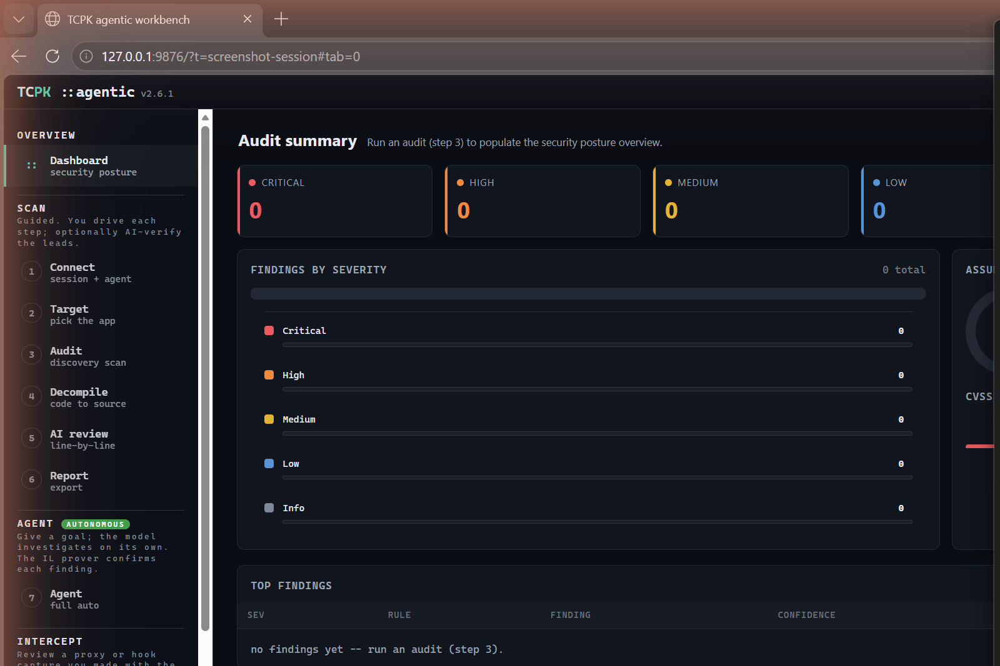
The landing page. After you run an audit (step 3) the dashboard populates with:
- Severity KPI cards -- counts of Critical, High, Medium, Low, Info findings plus the maximum CVSS v4.0 score.
- Findings by severity -- a horizontal bar chart breaking down finding counts.
- Assurance donut -- shows how many findings are Proven (Confirmed IL / dynamic), Leads (Inferred, need triage), and Likely-FP (IL-demoted).
- CVSS band -- a colour-coded strip showing the distribution of CVSS scores across Critical / High / Medium / Low.
- Top findings table -- the most important findings sorted by severity and confidence. Act on proven findings first.
1 -- Connect (session + agent)
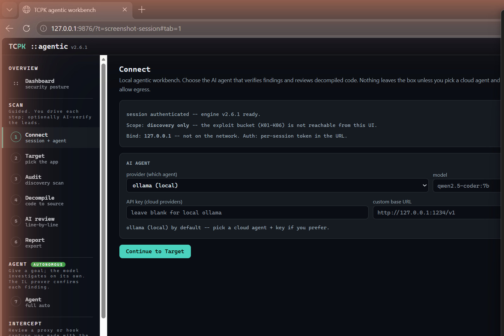
Configure the AI agent that verifies findings and reviews decompiled code.
- Provider -- choose between ollama (local, default), Claude, OpenAI, Gemini, Grok, DeepSeek, or a custom endpoint.
- Model -- the model name (e.g.
qwen2.5-coder:7bfor ollama). - API key -- needed for cloud providers; leave blank for local ollama.
- Custom base URL -- for a local server like LM Studio (
http://127.0.0.1:1234/v1). - Allow cloud egress -- uncheck to keep everything on your machine.
- Test agent -- verifies the agent connection.
2 -- Target (pick the app)
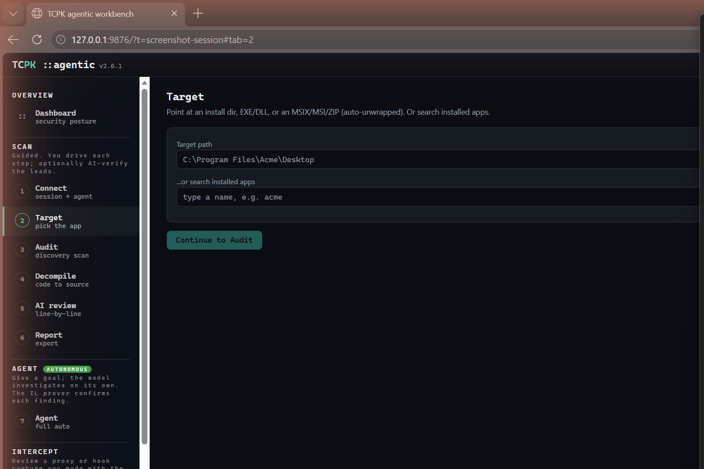
Point TCPK at the application you want to audit.
- Target path -- paste a path to an install directory, EXE, DLL, or an MSIX/MSI/ZIP file (auto-unwrapped).
- Search installed apps -- type a partial name and click Search to find installed applications, or click "List all" to see every installed app.
- Auto-Detect -- auto-identifies the app framework, runtime, and signer.
C:\Program Files\Acme\Desktop or search for an installed app by name. Click "Continue to Audit".3 -- Audit (discovery scan)
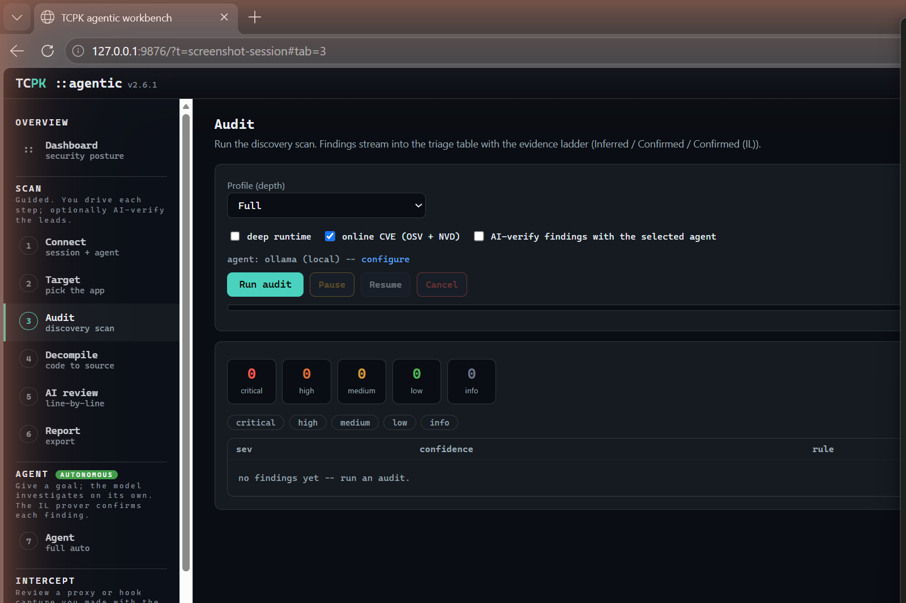
Run the discovery scan. Findings stream in live with the evidence ladder (Inferred / Confirmed / Confirmed (IL)).
- Profile -- Full (all checks), Standard, or Quick (skip slow OS scans).
- Deep runtime -- enable deep runtime checks (process memory, handles).
- Online CVE -- query OSV (NuGet/Electron) and NVD/CPE (native libs) for live CVE data.
- AI-verify findings -- the selected agent reviews each Inferred finding.
- Run audit / Pause / Resume / Cancel -- control the scan.
- Severity counters -- live KPI tiles and severity filter chips.
- Findings table -- sortable by severity, confidence, rule, and title.
4 -- Decompile (code to source)
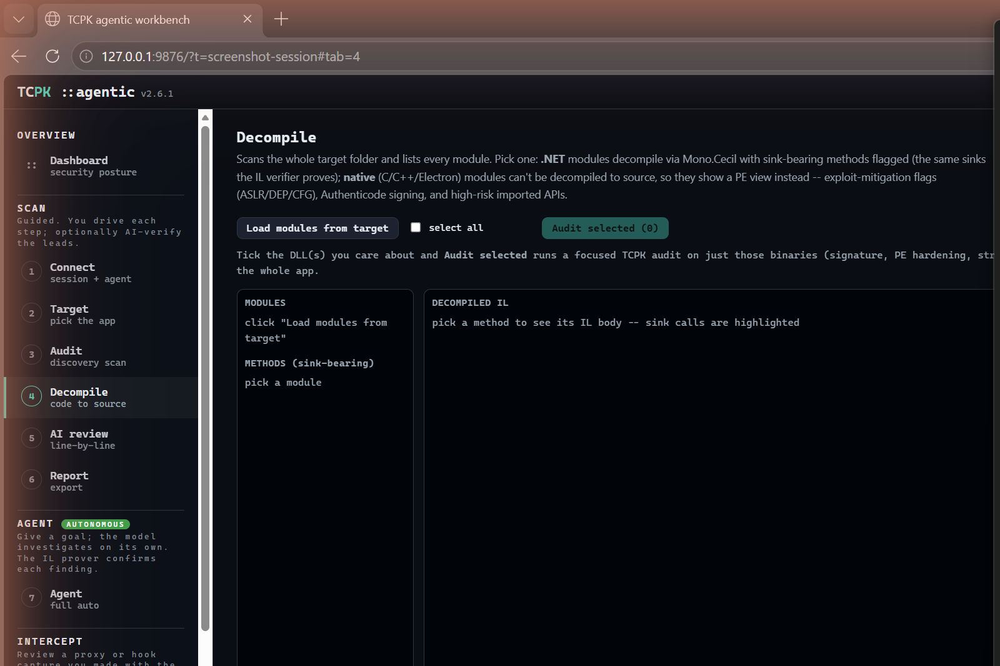
Disassemble .NET modules to IL with Mono.Cecil. Sink-bearing methods are flagged; native modules show PE metadata instead.
- Load modules from target -- enumerates all DLLs and EXEs in the target folder.
- Modules panel -- pick a module to see its types and methods.
- Methods (sink-bearing) -- methods that call known dangerous sinks are listed here.
- Decompiled IL -- the raw IL body with sink calls highlighted in red.
- Sinks in method -- a summary of which sinks the method calls.
- select all / Audit selected -- tick modules and run a focused TCPK audit on just those binaries.
- Send to AI review -- sends the selected method to the AI review tab.
5 -- AI review (line-by-line)
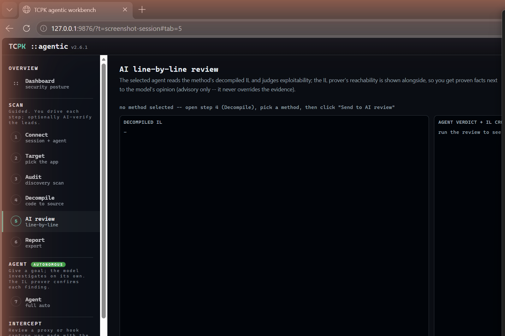
The selected agent reads the method's decompiled IL and judges exploitability. The IL prover's reachability verdict is shown alongside, so you get deterministic facts next to the model's opinion (advisory only -- the prover never overrides).
- Decompiled IL -- the method's IL body.
- Agent verdict + IL cross-check -- the AI's assessment with the prover's ground truth.
- Run AI review -- starts the agent review.
6 -- Report (export)
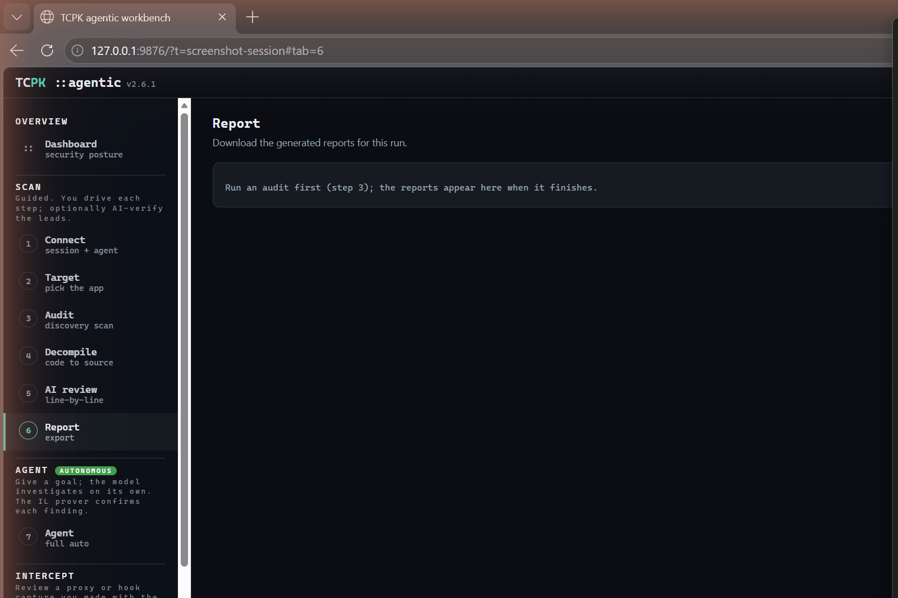
Download the generated reports after an audit completes.
Available report formats:
- Markdown -- human-readable summary with findings, evidence, and remediation.
- SARIF -- machine-readable format for IDE integration.
- Intel HTML -- self-contained HTML report with interactive filtering.
- Checklist XLSX -- maps findings to the OWASP TASVS checklist.
- findings.json -- raw JSON for scripting and CI pipelines.
7 -- Agent (autonomous / full auto)
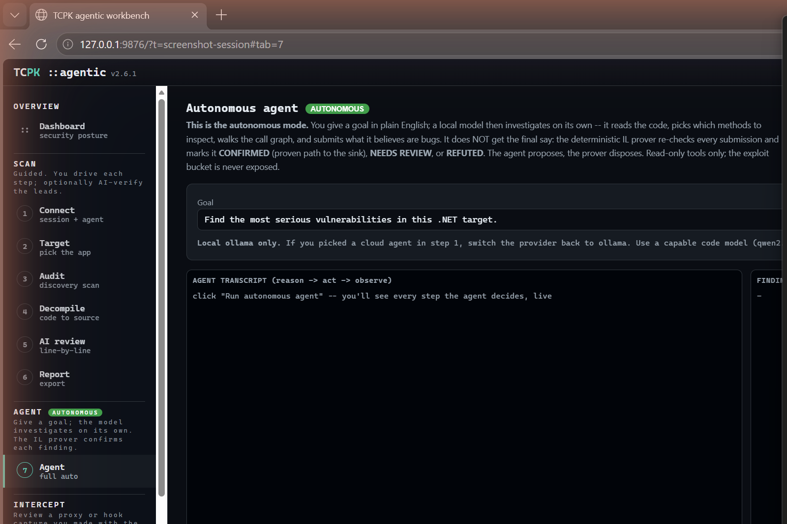
The autonomous mode. You give a goal in plain English; a local model then investigates on its own -- it reads the code, picks which methods to inspect, walks the call graph, and submits what it believes are bugs. The deterministic IL prover re-checks every submission and marks it: CONFIRMED (proven path to the sink), NEEDS REVIEW, or REFUTED.
- Goal -- describe what you want the agent to find (e.g. "Find the most serious vulnerabilities in this .NET target").
- Agent transcript -- a live feed of the agent's reason/act/observe loop.
- Findings (IL-grounded) -- the agent's submitted findings with prover verdicts.
8 -- Intercept (review capture)
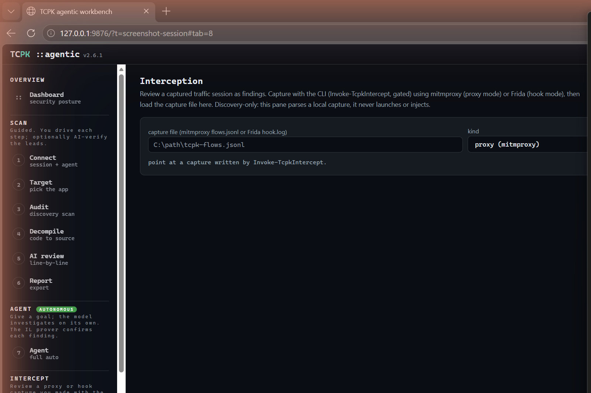
Review a captured traffic session as findings. Capture with the CLI (Invoke-TcpkIntercept, gated) using mitmproxy (proxy mode) or Frida (hook mode), then load the capture file here.
- Capture file -- path to a mitmproxy
flows.jsonlor Fridahook.log. - Kind -- proxy (mitmproxy) or hook (Frida).
- Load capture -- parses the file and produces findings (credentials, tokens, cleartext transport, endpoints).
Invoke-TcpkIntercept from the CLI, point this tab at the output file and click "Load capture". Findings from the wire appear in the triage table.9 -- Runtime / Live (live process)
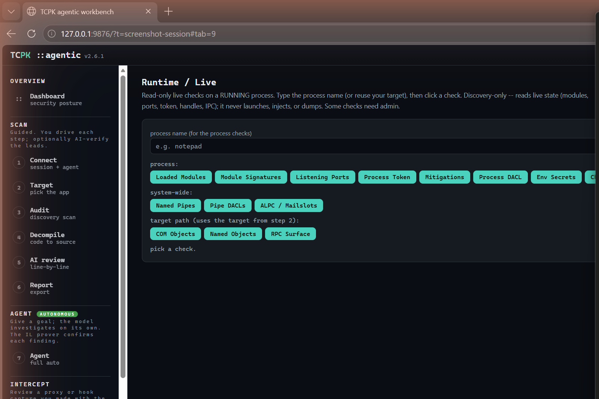
Read-only live checks on a running process. Type the process name (or reuse your target), then click a check button.
Process checks
- Loaded Modules, Module Signatures, Listening Ports, Process Token, Mitigations, Process DACL, Env Secrets, Child Procs, Handles, Windows, GUI Inspector
System-wide checks
- Named Pipes, Pipe DACLs, ALPC / Mailslots
Target path checks
- COM Objects, Named Objects, RPC Surface
notepad), click any check button. Results stream into the output pane. Colour-coded by category: grey = process, amber = trace (ETW, needs admin), blue = system, green = target-path, teal = clipboard, red = gated.10 -- Asar (unpack + browse)
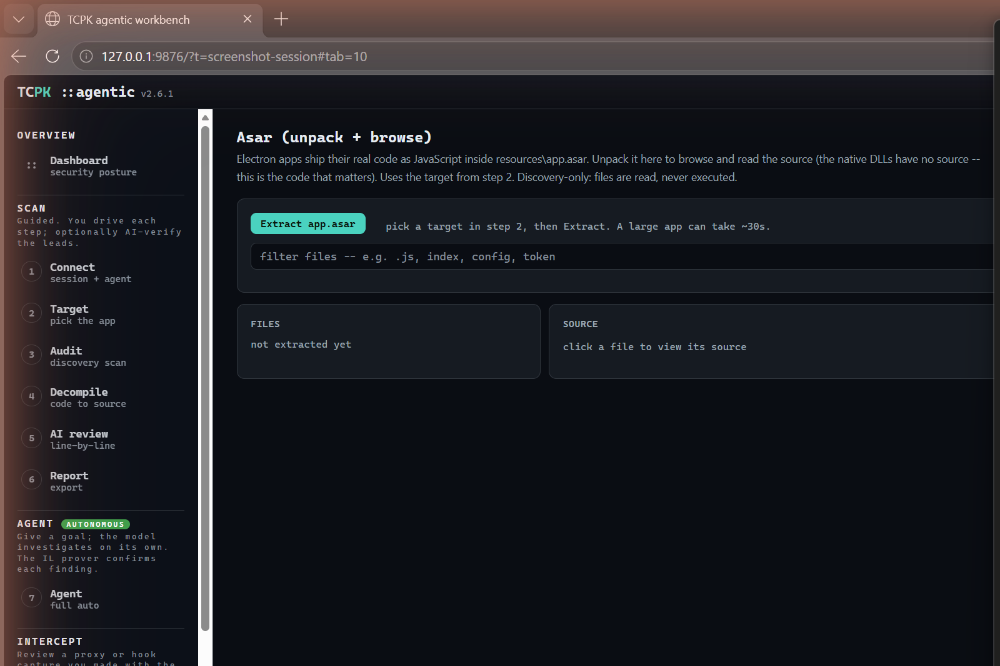
Electron apps ship their real code as JavaScript inside resources\app.asar. Unpack it here to browse and read the source -- this is the code that matters for security review.
- Extract app.asar -- unpacks the archive from the target.
- Filter files -- narrow the file list (e.g.
.js,index,config,token). - Files panel -- the extracted file tree.
- Source panel -- click a file to view its source code.
- Analyze folder in Audit -- run a focused TCPK audit on the extracted source.
- npm audit -- run a supply-chain audit on bundled node_modules.
11 -- Hex (byte view)
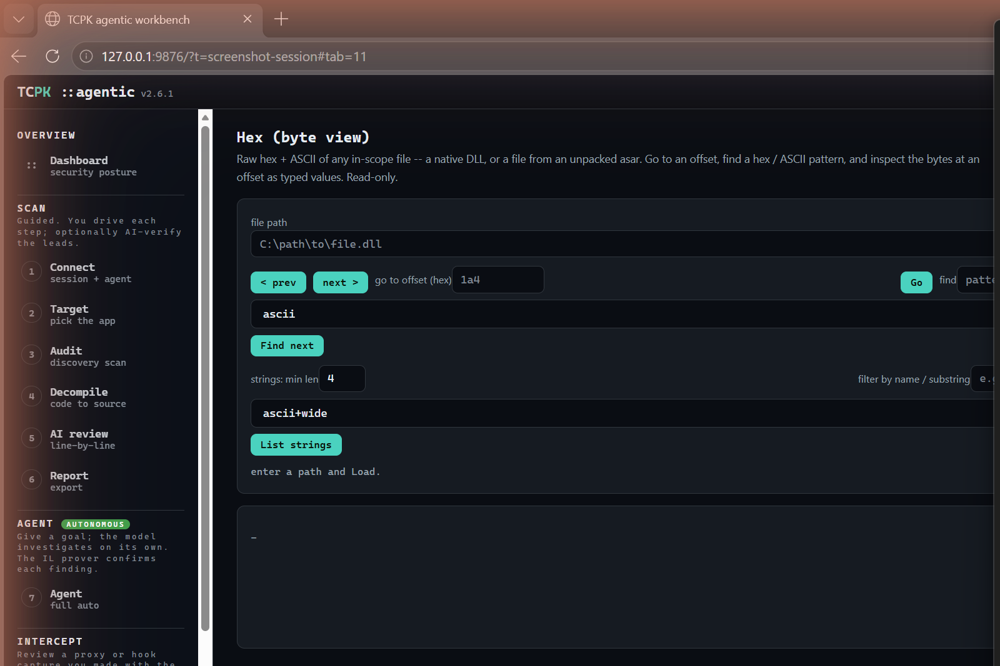
Raw hex + ASCII view of any in-scope file -- a native DLL, or a file from an unpacked asar.
- File path -- enter a path and click "Load".
- Navigation -- prev/next page, go to hex offset.
- Find -- search for an ASCII or hex pattern.
- Strings -- extract strings with a minimum length, filter by substring, in ascii, wide (UTF-16), or both.
- Data Inspector -- click a hex row to inspect the bytes at that offset as typed values (int8/16/32/64, float, double, UTF-8/16).
12 -- Process (live watch)
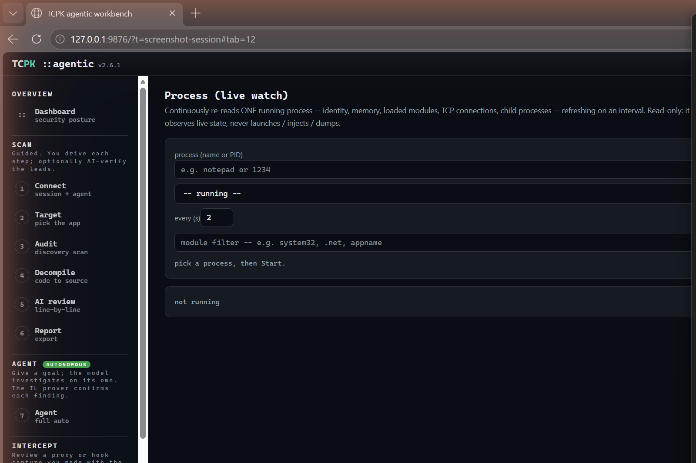
Continuously re-reads ONE running process -- identity, memory, loaded modules, TCP connections, child processes -- refreshing on an interval. Read-only: it observes live state, never launches, injects, or dumps.
- Process -- name or PID to watch.
- Refresh list -- dropdown of currently running processes.
- every (s) -- refresh interval (default 2 seconds).
- Module filter -- filter loaded modules by substring.
- Start / Stop -- begin or end the live watch.